All 48 runs completed 100 epochs and evaluated the validation-selected checkpoint on all 69,719 held-out test records. No training or scheduler failures.
Reconstructed geometries, full chemical descriptors, combined readout, learning rate 5.69 × 10⁻⁵. Values are mean ± sample standard deviation over three training seeds. Validation selects the checkpoint; held-out test accuracy is evaluated afterward.
| Torsion selection | Selected validation accuracy | Held-out test accuracy |
|---|---|---|
| Minimal | 96.29 ± 0.37% | 96.53 ± 0.20% |
| Augmented | 96.66 ± 0.32% | 97.02 ± 0.11% |
| Complete | 97.01 ± 0.26% | 97.13 ± 0.11% |
| Z-matrix | 84.36 ± 0.13% | 85.82 ± 0.24% |
The Z-matrix-only torsion input learns well above chance, while trailing the other torsion selections in this matched condition. The additional eight-bit pass provides no consistent improvement. One reduced-feature, torsion-readout eight-bit replicate stayed at chance and remains in the reported mean.
Full chemical features and combined readout. Solid curves use the original learning rate; dashed curves use the tenfold-lower rate. All three replicates per condition are shown. Each dotted vertical marks the mean 100-epoch completion time.
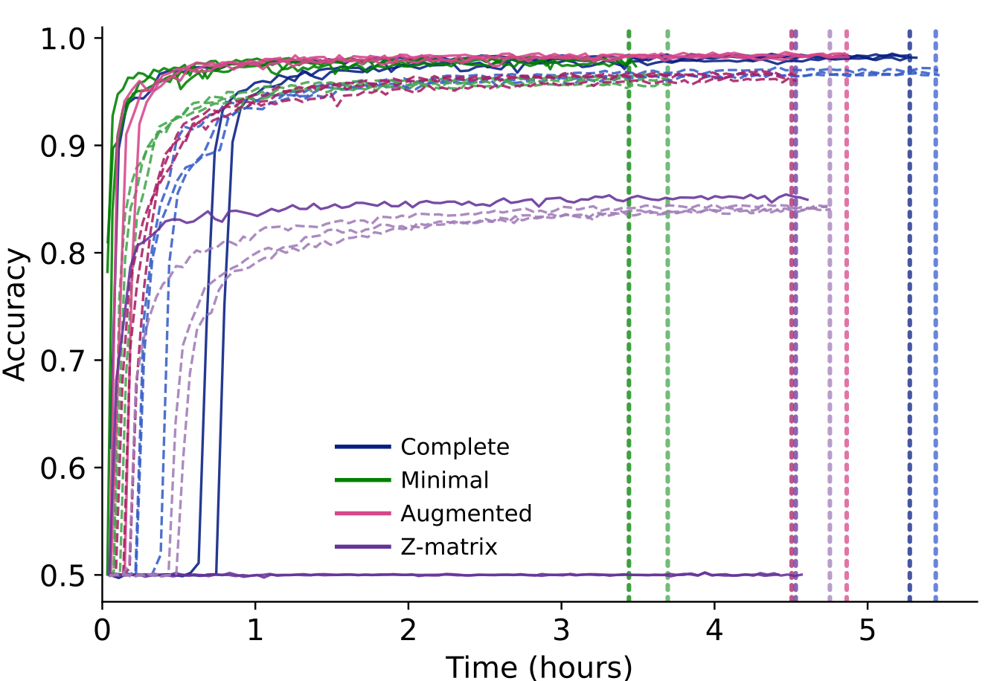
All curves below show individual replicates. Dotted vertical markers on the time plot show the mean epoch-100 completion time. Time counts measured training and validation loops; preparation, checkpoint writes and test evaluation are excluded. Geometry is already encoded in every condition; “extra eight-bit pass” is an additional quantization of those reconstructed torsions.
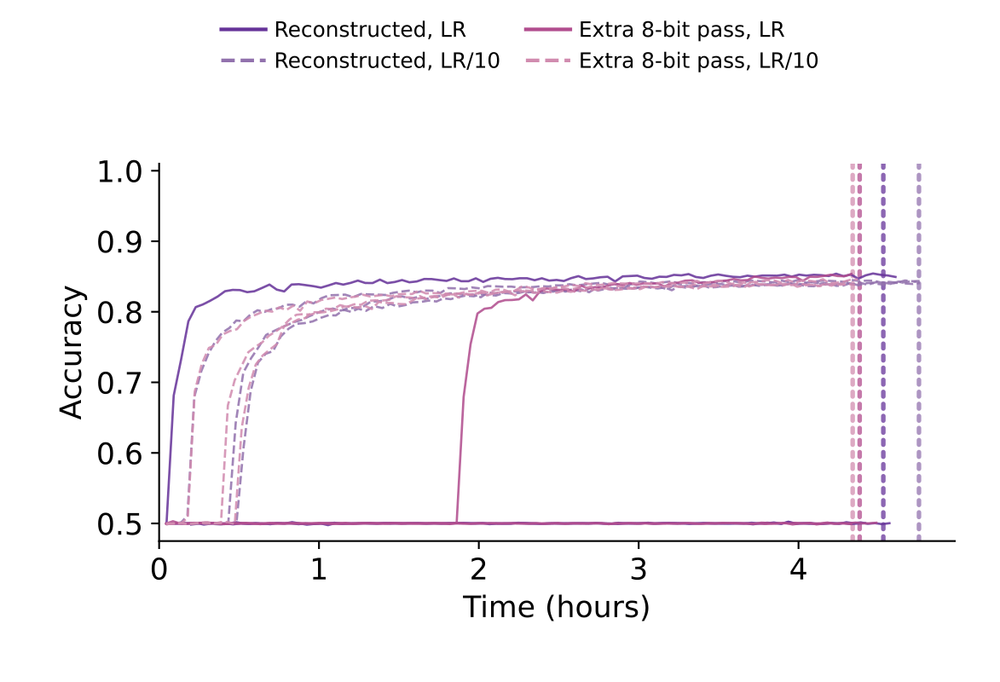
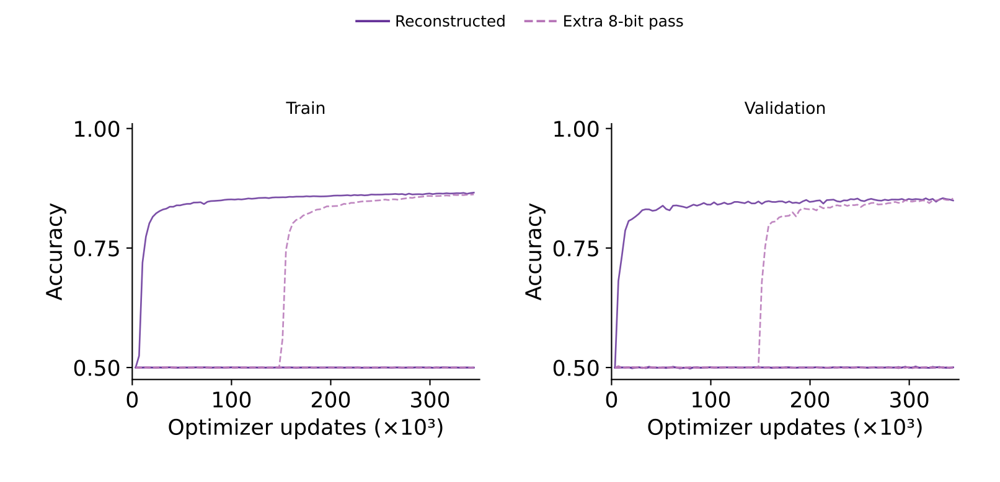
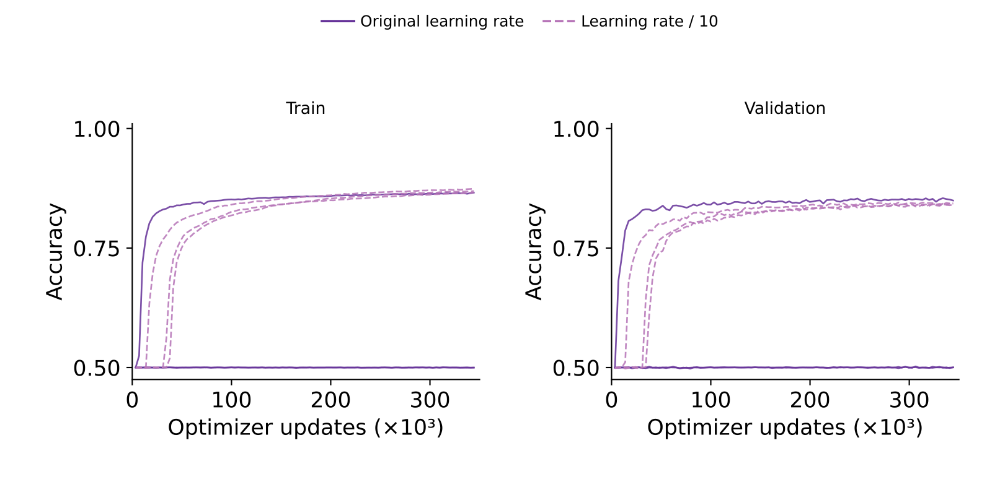
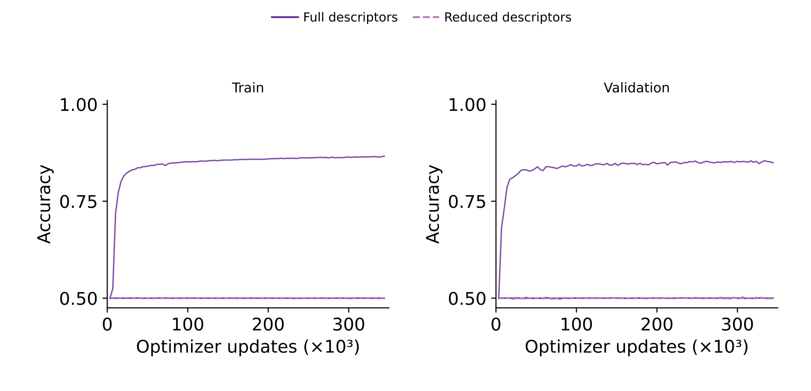
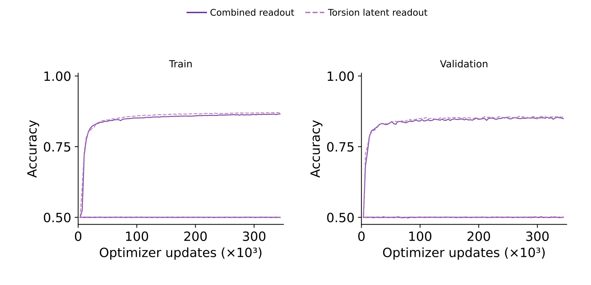
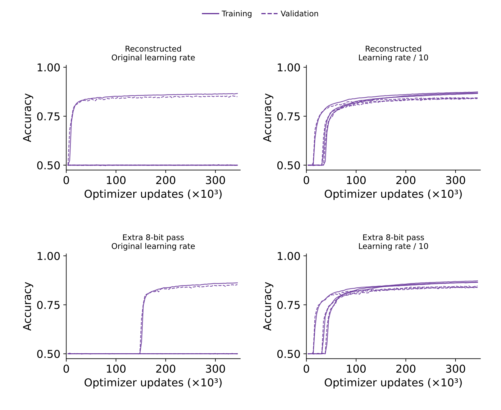
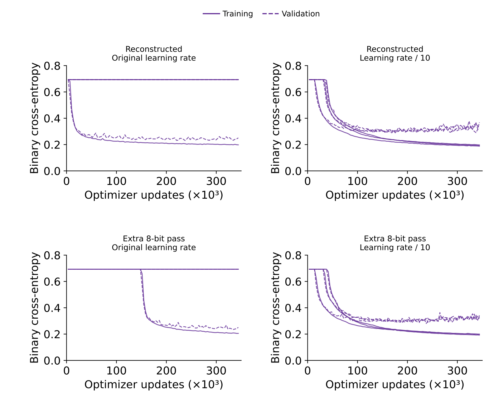
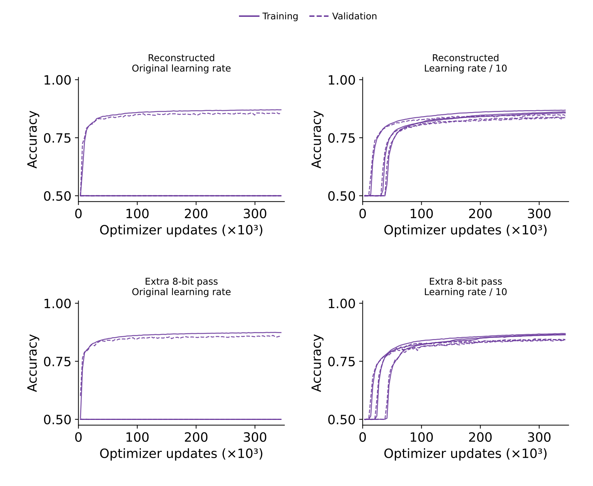
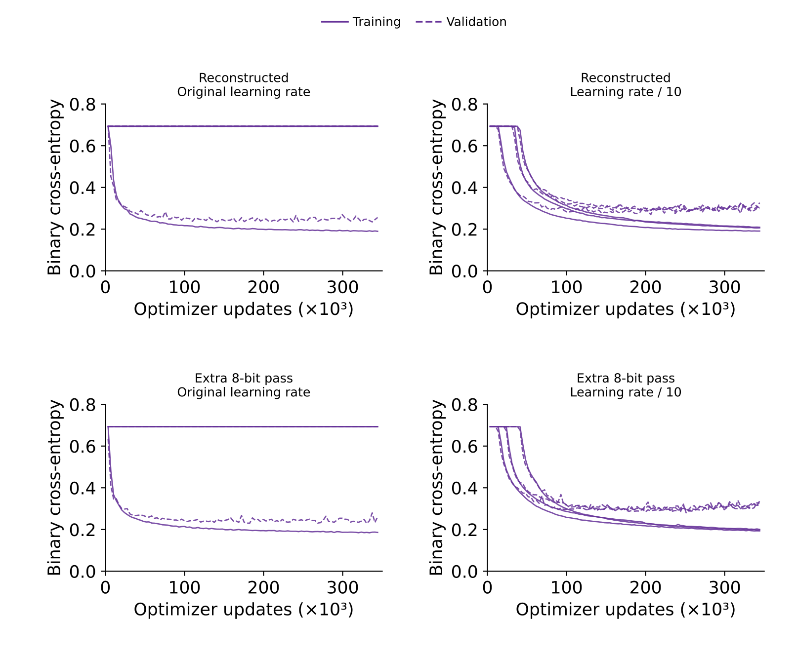
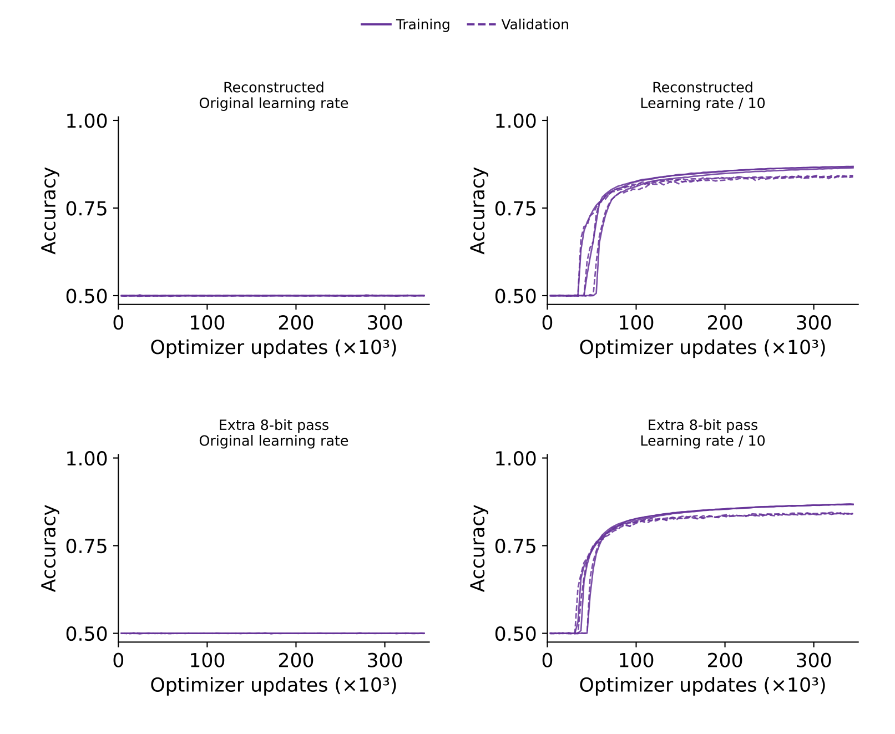
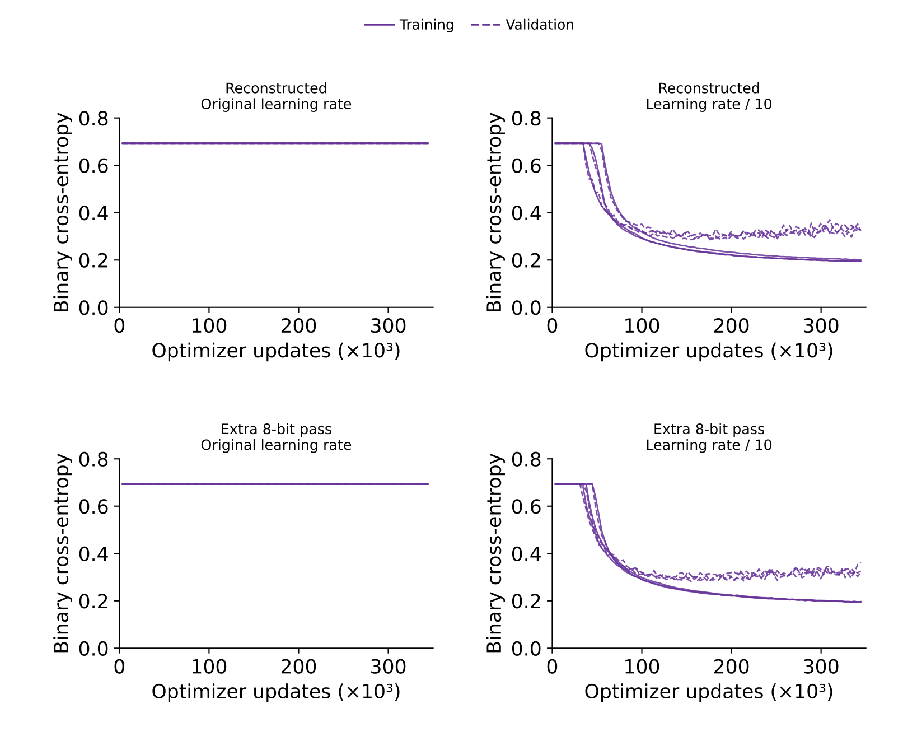
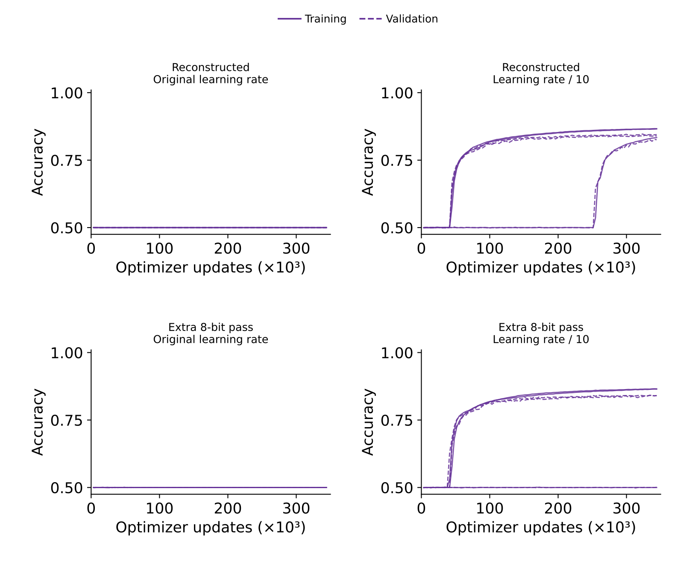
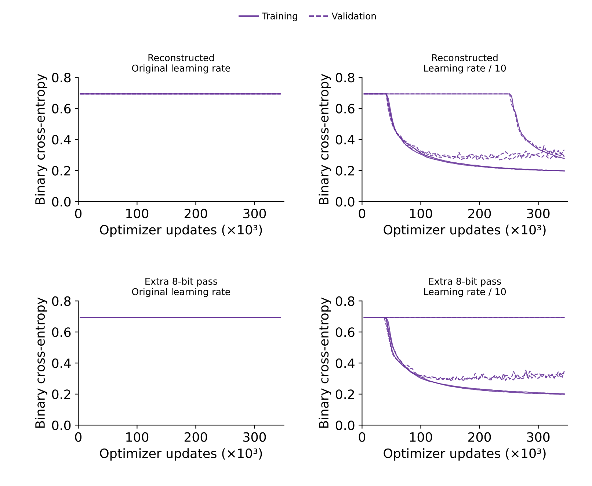